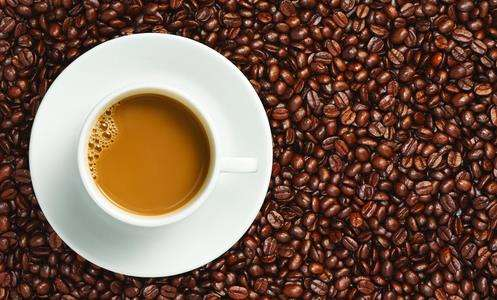

要来一杯咖啡吗？
要来一杯咖啡吗？
| 商品 | 价格 |
| 拿铁 | 128 |
| 卡布奇诺 | 200 |
| 奥瑞白 | 30 |

拿铁
拿铁咖啡是意大利浓缩咖啡(Espresso)与牛奶的经典混合，意大利人也很喜欢把拿铁作为早餐的饮料。意大利人早晨的厨房里，照得到阳光的炉子上通常会同时煮着咖啡和牛奶。

卡布奇诺
卡布奇诺是一种加入以同量的意大利特浓咖啡和蒸汽泡沫牛奶相混合的意大利咖啡。此时咖啡的颜色，就像卡布奇诺教会的修士在深褐色的外衣上覆上一条头巾一样，咖啡因此得名。

奥瑞白
专业咖啡知识交流 更多咖啡豆资讯 请关注咖啡工房（微信公众号cafe_style ） 北美的星巴克门店已经开始贩售 馥芮白 了。仅仅通过中文名，并不知道这是一杯什么样的咖啡。紧接着看了一下英文，赫然写着Flat White。原来就是大名鼎鼎的澳白！ 说到这里，有必要 红茶、绿茶和白茶都是由茶树叶子制成的。它们之间的不同之处在于叶子采摘的时间和氧化程度。 红茶的叶子会在加工过程中被氧化，而白茶和绿茶则不会。这使得红茶有一种独特的浓厚味道，也使得用热水冲泡茶叶时会析出更多的咖啡。 一杯237毫升的红茶中平均含有47毫克的咖啡因，但也可能含有多达90毫克的咖啡因。也就是说，就市面上普通的500毫升饮料而言，装满红茶最多会含有190毫克左右的咖啡因。相比之下，同样一杯237毫升的绿茶中只有20到45毫克的咖啡因，而每杯白茶中含有6到60毫克的咖啡因。 绿茶粉中的咖啡因含量往往更高，每半茶匙1克左右的抹茶粉通常含有35毫克的咖啡因。 需要注意的是，市面上的药草茶（herbal teas）虽然说不含咖啡因的，但是一杯237毫升的药草茶中仍然含有12毫克的咖啡因。也就是说，这个剂量已经被认为是微不足道了。 红茶、绿茶和白茶都是由茶树叶子制成的。它们之间的不同之处在于叶子采摘的时间和氧化程度。 红茶的叶子会在加工过程中被氧化，而白茶和绿茶则不会。这使得红茶有一种独特的浓厚味道，也使得用热水冲泡茶叶时会析出更多的咖啡。 一杯237毫升的红茶中平均含有47毫克的咖啡因，但也可能含有多达90毫克的咖啡因。也就是说，就市面上普通的500毫升饮料而言，装满红茶最多会含有190毫克左右的咖啡因。相比之下，同样一杯237毫升的绿茶中只有20到45毫克的咖啡因，而每杯白茶中含有6到60毫克的咖啡因。 绿茶粉中的咖啡因含量往往更高，每半茶匙1克左右的抹茶粉通常含有35毫克的咖啡因。 需要注意的是，市面上的药草茶（herbal teas）虽然说不含咖啡因的，但是一杯237毫升的药草茶中仍然含有12毫克的咖啡因。也就是说，这个剂量已经被认为是微不足道了。 红茶、绿茶和白茶都是由茶树叶子制成的。它们之间的不同之处在于叶子采摘的时间和氧化程度。 红茶的叶子会在加工过程中被氧化，而白茶和绿茶则不会。这使得红茶有一种独特的浓厚味道，也使得用热水冲泡茶叶时会析出更多的咖啡。 一杯237毫升的红茶中平均含有47毫克的咖啡因，但也可能含有多达90毫克的咖啡因。也就是说，就市面上普通的500毫升饮料而言，装满红茶最多会含有190毫克左右的咖啡因。相比之下，同样一杯237毫升的绿茶中只有20到45毫克的咖啡因，而每杯白茶中含有6到60毫克的咖啡因。 绿茶粉中的咖啡因含量往往更高，每半茶匙1克左右的抹茶粉通常含有35毫克的咖啡因。 需要注意的是，市面上的药草茶（herbal teas）虽然说不含咖啡因的，但是一杯237毫升的药草茶中仍然含有12毫克的咖啡因。也就是说，这个剂量已经被认为是微不足道了。 红茶、绿茶和白茶都是由茶树叶子制成的。它们之间的不同之处在于叶子采摘的时间和氧化程度。 红茶的叶子会在加工过程中被氧化，而白茶和绿茶则不会。这使得红茶有一种独特的浓厚味道，也使得用热水冲泡茶叶时会析出更多的咖啡。 一杯237毫升的红茶中平均含有47毫克的咖啡因，但也可能含有多达90毫克的咖啡因。也就是说，就市面上普通的500毫升饮料而言，装满红茶最多会含有190毫克左右的咖啡因。相比之下，同样一杯237毫升的绿茶中只有20到45毫克的咖啡因，而每杯白茶中含有6到60毫克的咖啡因。 绿茶粉中的咖啡因含量往往更高，每半茶匙1克左右的抹茶粉通常含有35毫克的咖啡因。 需要注意的是，市面上的药草茶（herbal teas）虽然说不含咖啡因的，但是一杯237毫升的药草茶中仍然含有12毫克的咖啡因。也就是说，这个剂量已经被认为是微不足道了。 红茶、绿茶和白茶都是由茶树叶子制成的。它们之间的不同之处在于叶子采摘的时间和氧化程度。 红茶的叶子会在加工过程中被氧化，而白茶和绿茶则不会。这使得红茶有一种独特的浓厚味道，也使得用热水冲泡茶叶时会析出更多的咖啡。 一杯237毫升的红茶中平均含有47毫克的咖啡因，但也可能含有多达90毫克的咖啡因。也就是说，就市面上普通的500毫升饮料而言，装满红茶最多会含有190毫克左右的咖啡因。相比之下，同样一杯237毫升的绿茶中只有20到45毫克的咖啡因，而每杯白茶中含有6到60毫克的咖啡因。 绿茶粉中的咖啡因含量往往更高，每半茶匙1克左右的抹茶粉通常含有35毫克的咖啡因。 需要注意的是，市面上的药草茶（herbal teas）虽然说不含咖啡因的，但是一杯237毫升的药草茶中仍然含有12毫克的咖啡因。也就是说，这个剂量已经被认为是微不足道了。